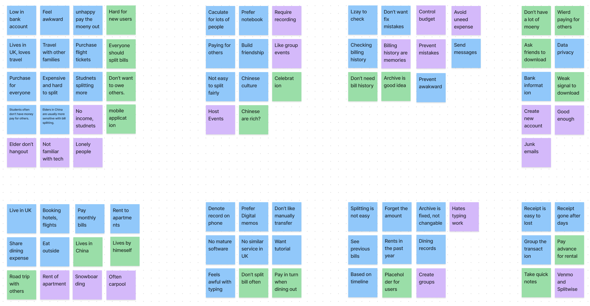
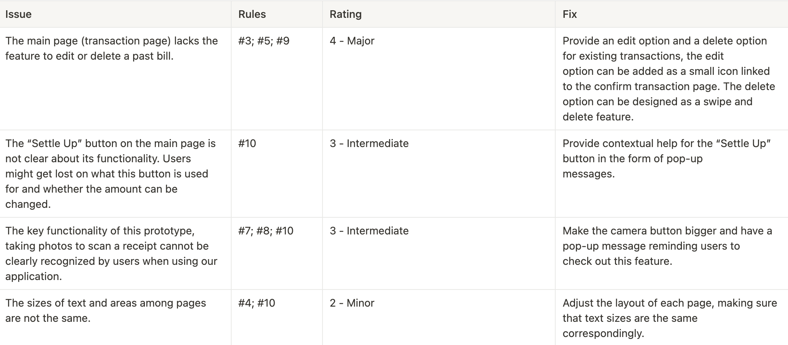
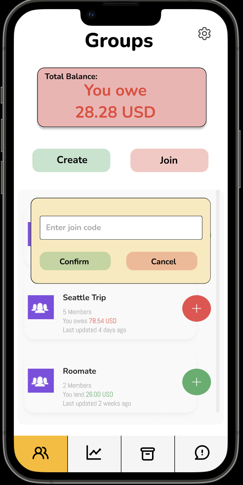
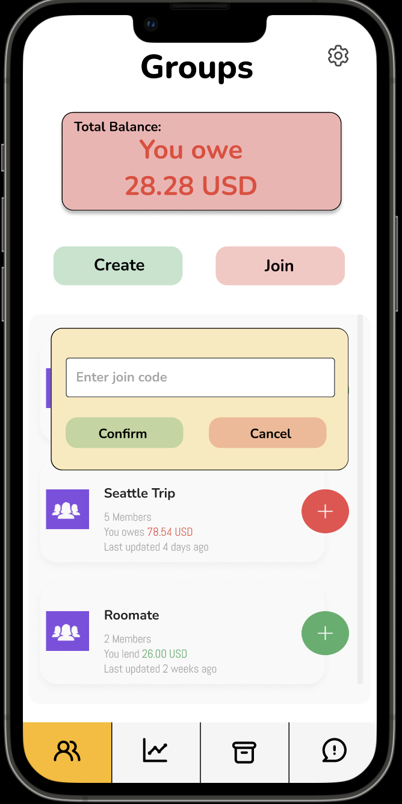

OVERVIEW
During a trip, a group of people often have the need of splitting bills with others. Our project’s current problem is: How can we split bills effectively and accurately, and how can we make our application track user’s every payment in detail to help them better control their total expense? Our group is going to design a spilt bill application, BuckFly. The main function of BuckFly is helping people calculate bills automatically, giving itemized information and the amount each person needs to pay or receive.


RESEARCH METHODS
Reserach Goal
- What people are the potential groups who need to share expense?
- How people split their bills with others?
- What is the inconvenience of the existing split billing scheme?
Competitive Analysis
We looked into six different bill splitting applications as our potential competitors of the problem statement. These applications have different focus on the bill splitting, some of them focus more on dining out and some of them integrated within the banking system. We analyzed the pros and cons for each competitor.

Splitwise
SplitWise is a tool for people to record bills and shared expenses with housemates, friends, and family... It is not a banking application, and it provides a lot of features for splitting expenses.
Settle Up
Settle Up keeps track of your personal or group expenses. It is designed for travelers, roommates, family members, etc.
Venmo
Venmo is an application for users to not only request or receive payments from others but also do some investments, such as buying bitcoin on the market. Venmo also has more sense of social media and provides a lot of related features.
Zelle
Zelle functions more like a built-in service in your bank application instead of an individual application. Zelle is easy to use, fast, and probably the most popular way to split the money with your friends as it has been embedded into almost bank applications available in the US.
Tab
Tab is a bill splitting application, the main functionality is splitting bills between friends. Users can take a picture of the receipt, then tap and claim the item they bought or ordered. The application would calculate the tax and tip for the users.
Plates by Splitwise
Plates is an application designed especially for dining out, but available only on the Apple store. It supports the split with up to 10 people. Users need to enter the price of each dish, drag their own item to their plates, and then split the shared items.
Interviews & Insights

1. People don't like to spend too much time to entering bills into their
smartphone.
People who are under 40 with active bill-splitting needs usually
use digital note-keeping tools to maintain bill records. But they
usually feel it tedious if it takes them more than 30 seconds to
create a new transaction every time, let alone a lot of typing work
required. The interviewees we have constantly mentioned they wish there
is a way to note bills quickly and without taking too much effort.
2. Managing bills alone for large groups is a terrible experience.
It is terrible to manage all bills for one person who was elected and
responsible to record and calculate expenses for the group. The elected
person might make mistakes or omissions that cause other people’s concerns.
Therefore, if everyone in the group can participate in the process of
recording and calculating the expenses, everyone is not required to do much
and can spread the responsibility evenly among everyone.
3. Reminding others to pay you back is often awkward.
People who pay bills for a group often want reminders in some way
to remind the group when some group members fail to pay the bill in
a certain period of time. So that the people who pay the bills in
advance could get their money back in time.
Storyboard
We created a Storyboard that a group of people go out to travel. One of the group members choose the rental car for the group, and used his own credit card to pay the rental fee for the whole group. He is really unhappy when spending this large amount of money and other group members haven't paid him back.
Persona
DESIGN PROCESS
We first brainstormed to simulate different workflows based on the insights and user stories we concluded previously. Then discussed the wireframes we needed and create the prototype on Figma. After that, we applied Nielsen’s 10 Heuristics rules to analyze our prototype, which allowed us to discover and evaluate potential usability issues.
Our Product Prototype
You can click the image below to view the prototype in our Figma workspace.
Don't Wait, Try it out! :)
In our design, every bill is associated with a specific group. More specifically, red means you owe others money and green means the opposite. And Blue means the other status or a settleup among a group. To let users view the status more efficiently, we used high-fidelity colors(Red, Green Blue) to denote different status of the entity. In our prototype, we have the following features:
- Register a new account; sign in via email and password or a existing third-party account.
- Group page. View the groups users have; create or join a group.
- Transaction page. View the transactions of current group. Create or settleup transactions.
- Bill history page. View all transactions based on the timeline.
- Notification page. View all pay requests and auto-reminders based on the timeline.
- Setting page. Profile editing; view usage policies; log out.
Evaluations
At this stage, we individually study the idea of Jakob Nielsen's 10 general principles for interaction design . Then we walked through the features above with the rules and sought usability issues for the prototype. We tried to evaluate them using the scale from 0 to 5 and found the most important usability issues. Here is the result chart.
5-Minute Demo
Checkout our project video! ☝️
SOLUTION
After diving deep into user researches, prototype discussions and usability evaluating with tremendous efforts, we insisted on the highest standard to reach our design goal: Making bill-splitting more effectively and accurately. Here are some walk through that shows our answers of "How-to".
 

Our App requires users to be the group member before sending or receiving pay requests.
Our App let users settle up transaction easily. Users can scan the bill to create a new transaction automatically.
Our App will help send pay request reminders periodically.
REFLECTION
As a team, we worked well together for every milestone and design process. We took advantages of teammate's idea during researches and read other teammate's report to help us perform better in the next step. We encouraged each other when met difficulties such as narrowing down interview questions and consolidating insights. We are proud of our work and achievement in these 11 weeks. We are also grateful to Professor Matt and TAs who help us learn this much.
ACKNOWLEDGEMENTS
Huge thanks to Professor Matt, TA Ethan Vu, and TA Yang Yue!
We could not have this UX design project done without your help
throughout this quarter.
Can Wang: I am very thankful to Professor Matt and TAs for helping me so much in this quarter. I also want to say I really appreciate my teammates, Ruokun and Xinnan. Ruokun is a great teammate. He always takes leads on the milestones and discussions of the assignments. He would make appointments with TA in advance for our group, allowing us to have enough time meeting and ask questions with TAs. Xinnan is an excellent teammate, who always comes up with great ideas and pushing us to finish the milestones as early as possible.
Ruokun Xu: I am grateful to Professor Matt for his teaching this quarter. At the beginning of the course, I had some doubts about Prof.Matt's requirements because I feel individual creativity is limited by those requirements. But with Prof. Matt's guidance, I understood the meaning of the design requirements and logic that Prof.Matt wanted us to understand. Some things are not as naive as I thought. Prof.Matt taught me that a scientific design flow helps us blueprint superior user experiences.
Xinnan Wu: I really want to say thank you to Professor Matt, TA Ethan and Yang for the supports and guidance you gave to me and our team this quarter. I still remembered in the first lecture I did not what Figma is when other classmates were discussing this UX design tool. But after one quarter's lecture and projects, I am able to getting a peek of what UX designers are doing in the real world and the tools they use for design and analysis. Thank you for making the knowledge easy to understand and accessible to us.